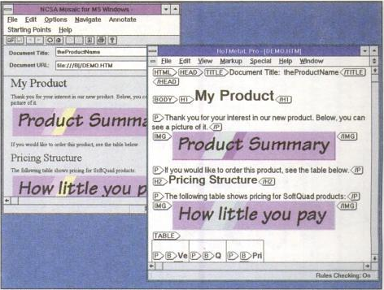
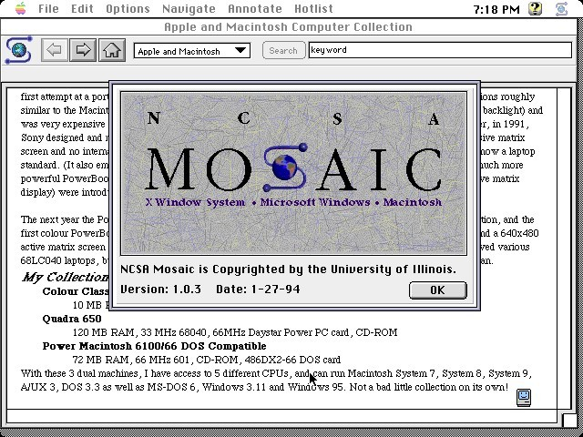

NCSA Mosaic Throbber (one of the first, if not THE first user interface “throbbers”)

Editing an HTML page in an early editor (HoTMeTaL Pro) while previewing in NCSA Mosaic

NCSA Mosaic 1.0 (MacOS)
NCSA Mosaic ▰ The first popular web browser, it was named for its support of multiple Internet protocols (WWW, FTP, NNTP, Gopher). Although Netscape Navigator was developed by many of the original Mosaic authors, it doesn’t share any code with Mosaic as commonly thought. Released ☯93JAN